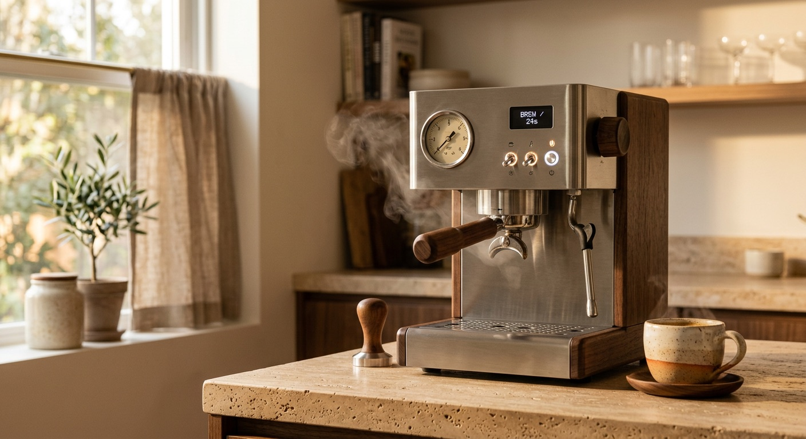
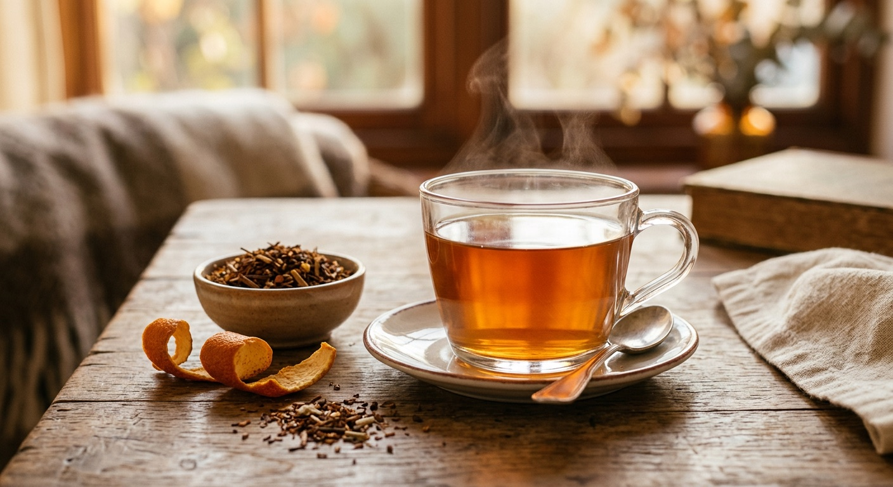
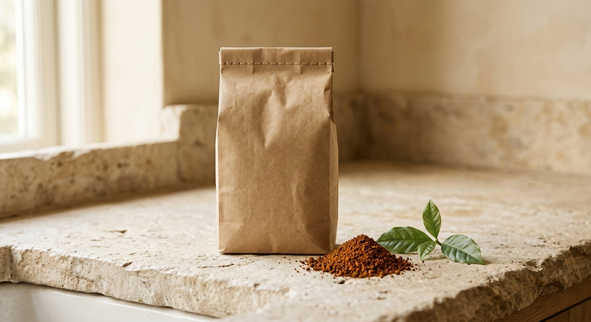

Notes on the morning ritual.
Brewing guides, origin stories, and small thoughts on doing mornings well — from the people who make the coffee and the machines.

How the Atelier learns your taste
It doesn’t guess, and it doesn’t need a questionnaire. Here’s what actually happens in the first two weeks on your counter — and why your cup keeps getting better.

In praise of the slow pour
Why the unhurried cup rewards your patience — and how to get the water right.

A morning in our SoHo café
Doors at seven, the first grind at 7:02. A few hours behind the bar at the flagship.
Single origin, explained
What “traceable to a single farm” really means, and why it changes the cup.

Tea, and the quiet hour
A small case for slowing down in the afternoon, one loose-leaf pot at a time.

Nothing wasted, right down to the grounds
Where your spent coffee goes after the cup — and how the Atelier keeps track.
Dialling in your first espresso
Grind, dose, time. The three dials that turn a decent shot into a great one.